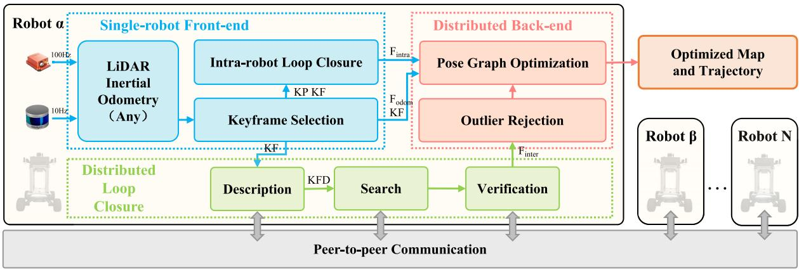
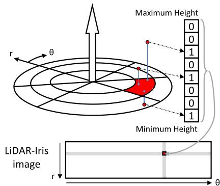
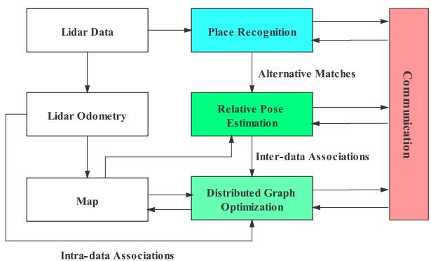
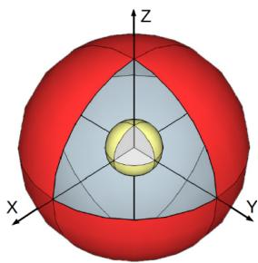

本节目标
读完你应该能：解释为什么「描述子」能当机器人之间的通用语言；说出 ScanContext → LiDAR-Iris → DELIGHT 的演进；讲清 DiSCo / DCL / RDC 三兄弟的异同；理解分布式 Gauss-Seidel（DGS）怎么在「没有服务器」时解位姿图。
和前面课程怎么接
★ 核心是回链第七季 0135 Scan Context 系列——那一节讲的免训练几何描述子，这一季被 DiSCo-SLAM直接拿来当机器人之间的通用语言，是隔一季的技术接续。★ 激光回环描述子（BoW3D / RING++）见第四季 0092 / 0093。★ 鲁棒后端仍是 PCM / 位姿图，回链0168 一致集最大化与第二季 0018 / 0019 位姿图优化。★ 假回环仍是敌人，回链0140 铁律。
1. 先说人话：没有服务器，怎么认出「同一个地方」
中心化里，「认不认得出同一个地方」是服务器说了算。分布式把服务器拆了——每台机器人只跟碰面的邻居说话。那它们怎么让对方相信自己看到的楼就是对方看过的那栋？答案是：不传原始点云（太重），而是各自抽出一串紧凑的「描述子」，把描述子当通用语言对一下。谁的描述子对上了，谁就是同一个地点。
本节的「三兄弟」都用这条路，只是描述子不同：DiSCo 用 ScanContext（极坐标环带）、DCL 用 LiDAR-Iris（二值旋转不变图）、RDC 用 DELIGHT（强度 + 特征值段）。描述子一个比一个更小、对视角更不敏感。它们同属 SYSU 血脉（DiSCo→DCL→RDC，分布式激光三兄弟），都用 PCM + 两阶段 DGS。
怎么看这张图：① 楼在两边画法不同（视角差），但描述子（右侧同心圆里的绿色扇区）编码的是「俯视一圈的距离分布」，对视角不敏感；② 绿色扇区位置一致 → 判定同一地点；③ 于是建立一条机间回环，而不必互传整片点云。
要记住的一句话：描述子就是机器人之间「通用语言」——对得上就认亲，传它比传点云省两三个数量级。
2. 论文一：DiSCo-SLAM（2022）——第一个把 ScanContext 用进多机激光
DiSCo-SLAM（Huang、Shan、Englot，IEEE RA-L 2022，NYU / See Metric）是首个用 Scan Context 描述子的分布式 3D 激光多机 SLAM。它的两个卖点：
- 两阶段全局-局部图优化：先求机器人之间的全局变换（LM），再做局部 PGO——专门克服 DGS 在「差初值」下不收敛的毛病；
- 增量 PCM（incremental Pairwise Consistent Measurement set Maximization）拒假回环：判据和 DOOR 类似，实验取 ε = 5，lazy 初始化（检测到 > 5 个回环才启动 PCM）。
通信：ScanContext 特征约 4.08 kB/帧（VLP-16），加上匹配点云与坐标变换，单帧激光 1.04 MB → 方法约 200 kB/帧。三机器人 Park 数据集上 ATE 1.43 m，远优于 DGS+PCM 的 13.00 m。
★ 命名教学点（重要）：本文（DiSCo-SLAM）名字和 D²SLAM（2024，Xu 等港科大，空中集群视觉惯性）极像，常被误认成同一篇甚至误以为清单标错。其实两篇都在语料库、清单本身没错：DiSCo = 激光分布式（Huang 等，用 Scan Context），D²SLAM = 视觉惯性空中 swarm（Xu 等，港科大）。必须靠作者与传感器区分，下一节 0173 会专门讲 D²SLAM。

怎么看这张图：典型「分布式」结构：本地前端（LIO-SAM / LeGO-LOAM）→ Scan Context 检索 → ICP 验证 → 增量 PCM 拒 outlier → 两阶段优化（先全局转、再局部 PGO）。注意没有中央服务器，每个机器人 α 自己跑完整流程，只和邻居交换描述子 / 点云 / 位姿。

怎么看这张图：对比 DGS（原分布式求解器）和 DiSCo 的两阶段优化——DGS 在差初值下三条轨迹对不齐（分散），DiSCo 先求全局变换把机器人「先摆正」再做局部 PGO，轨迹收敛到一致。这正是 DiSCo 相对 DGS 的核心改进。
3. 论文二：DCL-SLAM（2024）——LiDAR-Iris 做到 9 台
DCL-SLAM（Zhong、Qi、Liu 等，IEEE RA-L 2024，SYSU）把描述子换成了更轻的 LiDAR-Iris（一个 80×360 的二值图，用 LoG-Gabor + 傅里叶旋转不变编码），并设计了三阶段通信流水线：描述子检索 → 滤波点云 → ICP 验证相对位姿。后端用 PCM + RANSAC（先 RANSAC 几何验证再 PCM 集最大化，比纯 PCM 鲁棒），两阶段 DGS 求解。
- LiDAR-Iris 全局描述子约 29.12 kB/帧，单帧激光 VLP-16 1 MB / HDL-64 2 MB → 描述子只占约 29 kB；
- 演示了 9 台机器人规模（图书馆场景，平均 ATE 1.83 m，带宽 34.36 kB/s）；
- 前端无关（LIO-SAM / FAST-LIO2 都能换），完整开源。
★ 它和 DiSCo 同属「分布式激光 + PCM + DGS」家族，区别在描述子更小、规模更大、且用 RANSAC 给 PCM 先过滤一遍。

怎么看这张图：左「可换前端」→ 中「分布式回环模块」（描述子→滤波点云→ICP 验证）→ 右「分布式 PGO + 拒假测量」。和 DiSCo 比，多了「三阶段通信」和「RANSAC + PCM」双重保险，且明确写「fully distributed」。

怎么看这张图：这就是 LiDAR-Iris 的来历——把一圈激光扫描编码成一张旋转不变的二值描述图。对比 DiSCo 的 ScanContext「环带距离图」，Iris 对视角旋转更不敏感，所以更适合多机器人从不同方向扫同一处。
4. 论文三：RDC-SLAM（2022）——实时、极低带宽
RDC-SLAM（Xie、Zhang、Chen 等，IEEE RA-L 2022，SYSU）走「实时 + 极低带宽」路线：四模块（PR 地点识别 / 相对位姿 RP / 分布式图优化 DGO / 通信），用 DELIGHT 强度描述子检回环、再用特征值段描述子精修相对位姿。后端用 分布式 DGS（两阶段：先转后位），但没有显式鲁棒后端——只靠 DELIGHT 相似度阈值（卡方检验）+ RANSAC 几何验证，鲁棒性弱于 PCM / GNC 族。
- 通信：KITTI 全程 < 350 kB（145 s），原始数据 > 5 GB——省了四个数量级；
- 真实双机器人：ATE 0.0604 m（KITTI Seq.05）、0.1256 m（SYSU 校园）；
- 实用结论：「连接时长而非距离决定精度」——50 m 因连接太短、没跑完一次 DGO 而变差。

怎么看这张图：左 PR（地点识别，产候选）、中 RP（相对位姿，DELIGHT + 段描述子精修）、右 DGO（分布式图优化）。四模块通过一套含重传 / 超时的通信协议串联，工程上很实用，但注意它依赖几何验证而非 PCM / GNC 硬拒 outlier。

怎么看这张图：DELIGHT 把空间按「径向 / 俯仰 / 方位」三个轴切成球壳格子（共 16 个 bin），用强度统计编码。它是 ScanContext 类的又一个替代描述子——比 ScanContext 多了一个「强度」维度，更省带宽。
5. 描述子演进：ScanContext → LiDAR-Iris → DELIGHT
三兄弟的描述子一条线演进，画成三张「极坐标 / 球壳格子图」就很直观：从「环带距离图」到「旋转不变二值图」再到「球壳强度图」，共同趋势是更小、对视角更不敏感。
怎么看这张图：① 左图编码「俯视一圈的距离分布」；② 中图把编码做成旋转不变，机器人转个角度描述子仍对得上；③ 右图加「强度」维并切成球壳 bin，最紧凑。
要记住的一句话：描述子演进 = 更小 + 更抗视角差，这正是分布式多机「对暗号」能成立的前提。
6. 分布式 Gauss-Seidel（DGS）：没有服务器怎么解位姿图
中心化里「全局 BA」是服务器一把梭。分布式里没有服务器，常用 分布式 Gauss-Seidel（DGS）：每台机器人手里攥着「半张位姿图」（自己的轨迹 + 和邻居的约束），大家交替「你算一半、我算一半」——我固定你的变量、优化我的，再把更新过的变量发给你；你再固定我的、优化你的。来回几轮就收敛。DiSCo / DCL / RDC 都用「两阶段 DGS」：先对齐旋转、再优化位置（先转后位）。
怎么看这张图：① 黄圈标出「两台共享的那条边」（机间约束）；② A 固定 B 的变量、优化自己的，把结果发给 B；B 同样做；③ 来回几轮，两张图在共享边上对齐、整体收敛。
要记住的一句话：DGS 把「全局 BA」拆成「各机轮流转、互相发更新」，不需要中央服务器——这就是分布式解位姿图的本质。
互动判断
DiSCo-SLAM 用的描述子，最早是在哪一节被我们详细讲过的？
7. 通信量预算：三兄弟都比传点云省两三个数量级
怎么看这张图：① 左边红色管是「传原始点云」，会撑爆带宽；② 右边几条细管是各描述子，差两三个数量级；③ 这正是 0168 带宽光谱的「落地版」。
要记住的一句话：分布式多机的可行性，根子上来自「用紧凑描述子替代原始点云」这一招。
互动判断
RDC-SLAM 相比 DiSCo / DCL，在鲁棒性上的短板是？